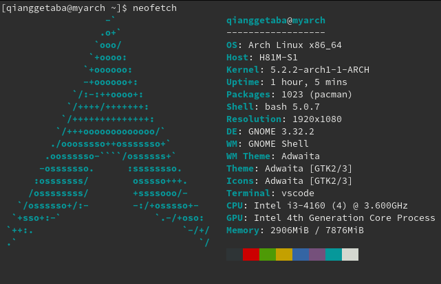

archlinux系统中的一些常识或常用记录
arch系统中的一些常规记录，常用路径，常用命令等等
- 更新包db
pacman -Sy - 安装软件
pacman -S name - 安装已下载包
pacman -U name.pkg.tar.xz
- pacman下载的包路径
/var/cache/pacman/pkg
桌面的应用路径，就是点击Activity或者按win按键出来的应用
也叫Desktop entries
图标显示不正常或者没有可以看看/usr/share/applications/上面图标文件.desktop中的Icon默认路径,一般是48x48的png
/usr/share/pixmaps/
- pacman下载的镜像地址设置
/etc/pacman.d/mirrorlist - archlinuxcn源
/etc/pacman.conf
gnome桌面环境内,一些常用应用的【程序名称】，方便shell或配置等等调用
- 显示所有应用列表
win + a
- 模拟终端，就是点击打开的终端
gnome-terminal
- 应用中Files来文件管理器,文件管理器的左侧下面的other location可以方便的房屋ftp,sftp等等，ssh隧道，很好用
nautilus - Files中 ,快速显示隐藏文件，就是以点开头的配置
ctrl + h
- 应用中的Screenshot
gnome-screenshot - 在设置中可以加入系统快捷键，实现类似qq的ctrl + alt +a 截图
gnome-screenshot -a
- 查询包信息
pacman -Si xorg-server - 查询包组信息, 就是是一组相互联系的包
pacman -Sg xorg - 查询包依赖
pacman -Si xorg-server|sed -n '/Depends\ On/,/:/p'|sed '$d'|cut -d: -f2
- pacman使用的包的db是个压缩包
*.db.tar.gz - 可以自己解压看看
file /var/lib/pacman/sync/core.db
- 使用rufus写arch的iso到U盘选mbr方式以iso方式写入
- 可以放脚本或文件到U盘根目录，启动后访问
/run/archiso/bootmnt - 就是挂载路径，但是【只读】
- 这样制成的U盘直接也可以在efi下引导
- 修改gnome锁屏背景,没有修改的设置，只能这样重新打包主题文件
https://wiki.archlinux.org/index.php/GDM#Log-in_screen_background_image
在终端显示系统信息的
screenfetchneofetch
桌面显示cpu内存，网络等资源管理器
conky
1
2
3
4
5
6
7
8
9
10
11
12
13
14
15
16
17
18
19
20
21
22
23
24
25
26
27
28
29
30
31
32
33
34
35
36
37
38
39
40
41
42
43
44
45
46
47
48
49
50
51
52
53
54
55
56
57
58
59
60
61
62
63
64
65
66
67
68
69
70
71
72
73
74
75
76
77
78
79
80
81
82
83
84
85
86
87
88
89
90
91
92
93
94
95
96# conky 1.11.4, 我的配置，放入 ～/.config/conky/conky.conf
conky.config = {
alignment = 'top_right',
background = false,
border_width = 1,
cpu_avg_samples = 2,
net_avg_samples = 2,
use_xft = true,
-- Xft font when Xft is enabled
font = 'Sans:size=9',
-- Text alpha when using Xft
xftalpha = 0.8,
default_color = 'white',
default_outline_color = 'white',
default_shade_color = 'white',
draw_borders = false,
draw_graph_borders = true,
draw_outline = false,
draw_shades = false,
gap_x = 5,
gap_y = 31,
minimum_height = 5,
minimum_width = 5,
no_buffers = true,
out_to_console = false,
out_to_stderr = false,
extra_newline = false,
double_buffer = true,
-- Create own window instead of using desktop (required in nautilus)
own_window = true,
own_window_class = 'Conky',
own_window_argb_visual = true,
own_window_transparent = true,
own_window_hints = 'undecorated,below,sticky,skip_taskbar,skip_pager',
own_window_type = 'desktop',
stippled_borders = 0,
update_interval = 1.0,
uppercase = false,
use_spacer = 'none',
show_graph_scale = false,
show_graph_range = false
}
conky.text = [[
${alignc}${color4}${time %a} ${time %b} ${time %e} ${alignc}${color1}${time %H}:${color2}${time %M}:${color3}${time %S}
${color white}SYSTEM ${hr 1}${color}
Hostname: $alignr$nodename
Kernel: $alignr$kernel
Uptime: $alignr$uptime
CPU: ${alignr}${freq dyn} MHz
Processes: ${alignr}$processes ($running_processes running)
Load: ${alignr}$loadavg
CPU ${alignr}${cpu cpu0}%
${cpubar 4 cpu0}
Ram ${alignr}$mem / $memmax ($memperc%)
${membar 4}
swap ${alignr}$swap / $swapmax ($swapperc%)
${swapbar 4}
Highest CPU $alignr CPU% MEM%
${top name 1}$alignr${top cpu 1} ${top mem 1}
${top name 2}$alignr${top cpu 2} ${top mem 2}
${top name 3}$alignr${top cpu 3} ${top mem 3}
${top name 4}$alignr${top cpu 4} ${top mem 4}
${top name 5}$alignr${top cpu 5} ${top mem 5}
Highest MEM $alignr CPU% MEM%
${top_mem name 1}$alignr${top_mem cpu 1} ${top_mem mem 1}
${top_mem name 2}$alignr${top_mem cpu 2} ${top_mem mem 2}
${top_mem name 3}$alignr${top_mem cpu 3} ${top_mem mem 3}
${top_mem name 4}$alignr${top_mem cpu 4} ${top_mem mem 4}
${top_mem name 5}$alignr${top_mem cpu 5} ${top_mem mem 5}
${color white}NETWORK ${hr 1}${color}
Down ${downspeed enp2s0}/s ${alignr}Up ${upspeed enp2s0}/s
${downspeedgraph enp2s0 25,107} ${alignr}${upspeedgraph enp2s0 25,107}
Total ${totaldown enp2s0} ${alignr}Total ${totalup enp2s0}
${color white}DISKIO ${hr 1}${color}
Read ${diskio_read}/s ${alignr}Write ${diskio_write}/s
${diskiograph_read /dev/sda 25,107} ${alignr}${diskiograph_read /dev/sda 25,107}
]]
转载请注明来源，欢迎对文章中的引用来源进行考证，欢迎指出任何有错误或不够清晰的表达。可以在下面评论区评论，也可以邮件至 hui740024906@163.com
文章标题:archlinux系统中的一些常识或常用记录
文章字数:1k
本文作者:qianggetaba
发布时间:2019-08-05, 19:51:14
最后更新:2019-08-06, 10:55:11
原始链接:https://qianggetaba.com/2019/08/05/archlinux-common/版权声明: "署名-非商用-相同方式共享 4.0" 转载请保留原文链接及作者。